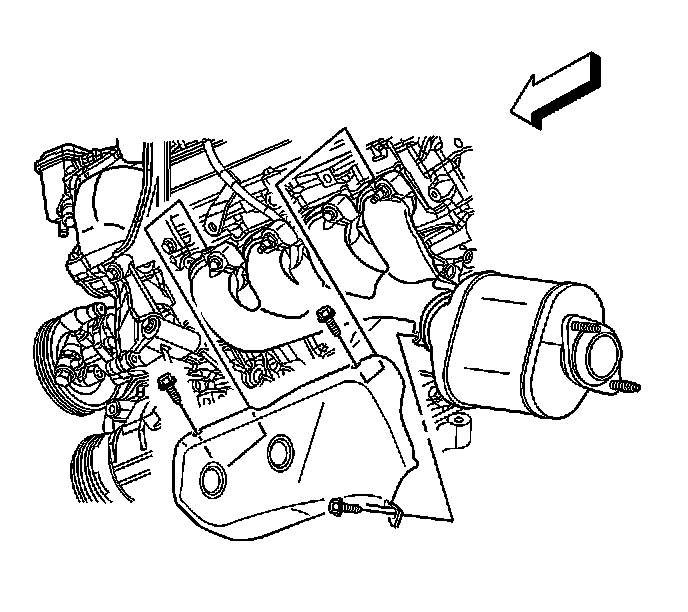
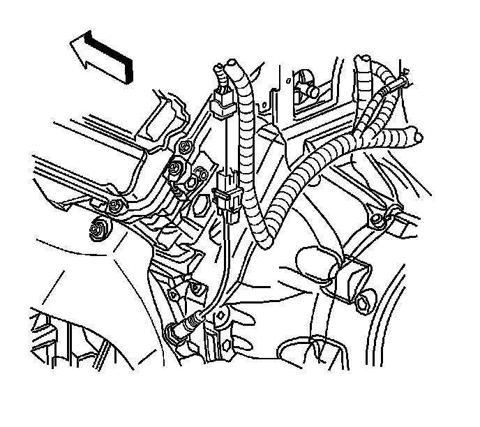

Exhaust Manifold Heat Shield Replacement - Left Side (V8 w/LHD)
Exhaust Manifold Heat Shield Replacement - Left Side (V8 w/LHD)
Removal Procedure
Caution: Refer to Exhaust Service Caution (Service Precautions) .
Caution: Refer to Protective Goggles and Glove Caution (Protective Goggles and Glove Warning) .

1. Remove the air cleaner housing assembly. Refer to Air Cleaner Assembly Replacement (Service and Repair) .
2. Remove the nut securing the air conditioning (A/C) lines to the left hand shock tower.
Position the lines aside to provide tool access to the exhaust manifold shield front bolt.
3. Remove the front upper heat shield bolt.
4. Disconnect the master cylinder electrical connector.
5. Remove the master cylinder mounting nuts.
Position the master cylinder towards the engine to gain tool access to the exhaust manifold shield rear bolt.
6. Remove the rear upper heat shield bolt.

7. Disconnect both Bank 2 heated oxygen sensor pigtail connectors from the wiring harness connector.
8. Remove the power steering gear. Refer to Steering Gear Replacement (Left Hand Drive) (Service and Repair)Steering Gear Replacement (Right Hand Drive) (Service and Repair) .
9. Remove the lower intermediate steering shaft. Refer to Lower Intermediate Steering Shaft Replacement (Lower Intermediate Steering Shaft Replacement) .
10. Remove the exhaust system. Refer to Exhaust System Replacement (Service and Repair) .
11. Remove the Bank 2, Sensor 1 heated oxygen sensor. Refer to Heated Oxygen Sensor Replacement - Bank 2 Sensor 1 (Service and Repair) .
12. Remove the remaining exhaust manifold heat shield bolt and remove the shield.
Installation Procedure
Notice: Refer to Fastener Notice (Fastener Notice) .
1. Install the exhaust manifold heat shield to the manifold with the lower bolt.
Tighten the bolt to 10 N.m (89 lb in).
2. Install the Bank 2, Sensor 1 heated oxygen sensor. Refer to Heated Oxygen Sensor Replacement - Bank 2 Sensor 1 (Service and Repair) .
3. Install the exhaust system. Refer to Exhaust System Replacement (Service and Repair) .
4. Install the lower intermediate steering shaft. Refer to Lower Intermediate Steering Shaft Replacement (Lower Intermediate Steering Shaft Replacement) .
5. Install the power steering gear. Refer to Steering Gear Replacement (Left Hand Drive) (Service and Repair)Steering Gear Replacement (Right Hand Drive) (Service and Repair) .
6. Lower the vehicle.
7. Connect the heated oxygen sensor pigtail connectors to the wiring harness connector.
8. Install the rear upper heat shield bolt.
Tighten the bolts to 10 N.m (89 lb in).
9. Install the master cylinder and connect the master cylinder electrical connector. Refer to Master Cylinder Replacement (Master Cylinder Replacement) .
10. Install the front upper heat shield bolt.
Tighten the bolt to 10 N.m (89 lb in).
11. Install the nut securing the A/C lines to the left hand shock tower.
Tighten the nut to 10 N.m (89 lb in).
12. Install the air cleaner housing assembly. Refer to Air Cleaner Assembly Replacement (Service and Repair) .